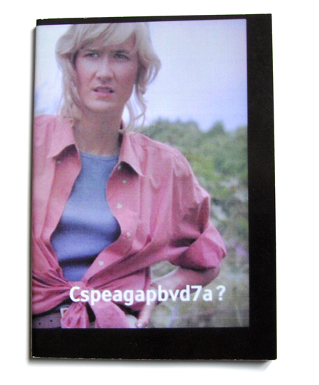
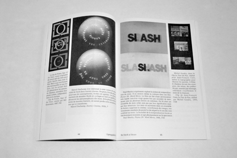
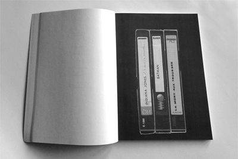

Cspeagapbvd7a ?
ou comment se perfectionner en anglais
grâce aux plus belles vedettes du septième art
Recherches, réflexions sur le sous-titrage au cinéma
et ses bienfaits sur l'apprentissage d'une langue étrangère
Alice Maitre
|  | |
|  | |
|  |
165 x 235 mm 80 p. soft cover Edition of 15 june 2012